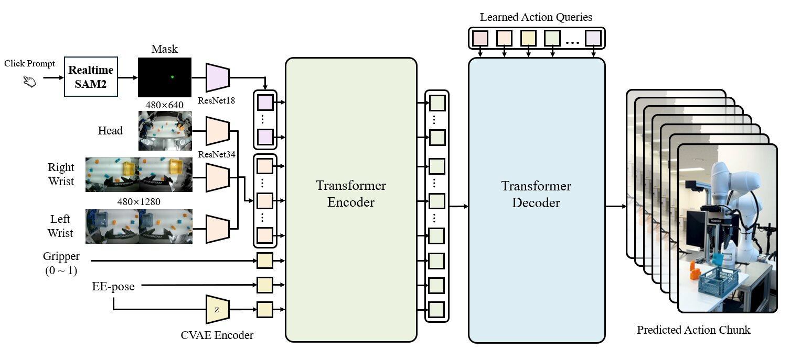
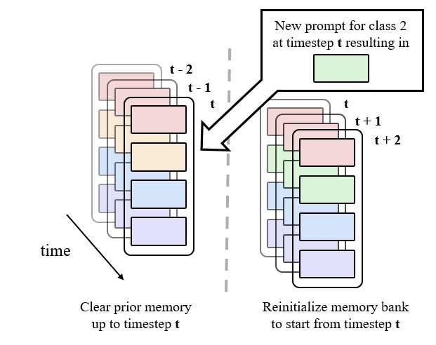
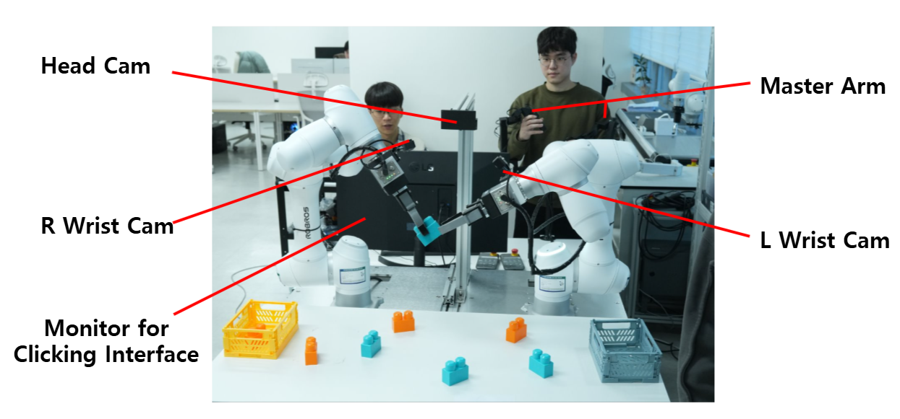
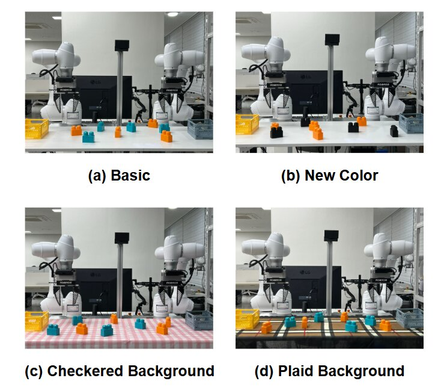
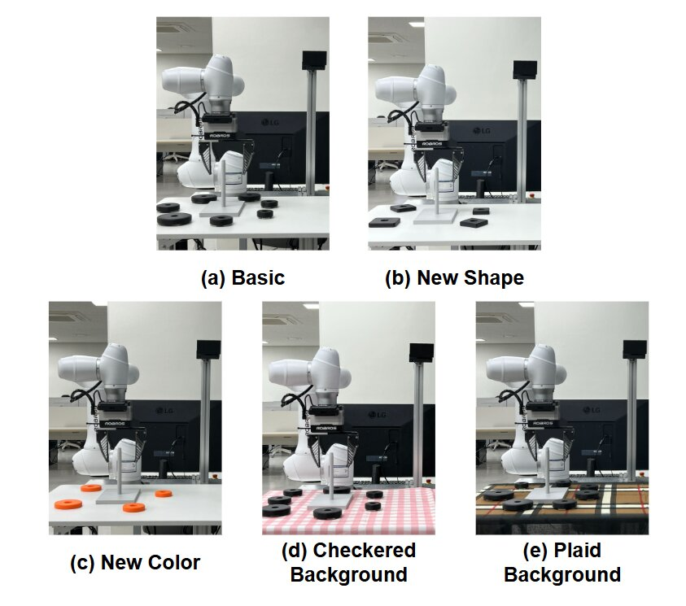
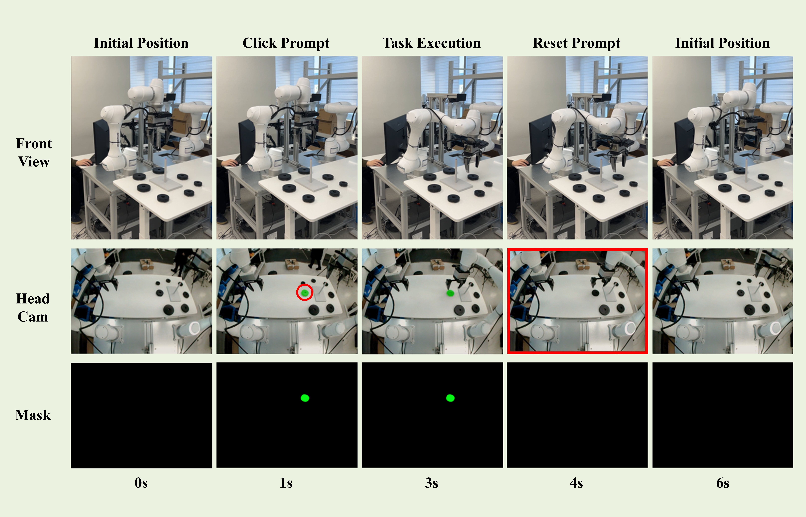

Block sorting success
VCA reached 96% success over 100 real-world trials, with no wrong-target selections reported.
Vision-Click-Action Framework
VCA replaces ambiguous language prompts with click-based object selection. A user click creates a real-time segmentation mask, and a mask-conditioned transformer policy executes the requested manipulation.

Method
VCA adapts SAM2-style video segmentation for live robot operation. User prompts can be added or reset mid-episode, allowing the robot to track explicitly selected object instances instead of interpreting verbose language descriptions.
The selected mask is encoded alongside multi-view RGB observations and robot proprioception. A transformer encoder fuses these tokens, and a decoder predicts action chunks for closed-loop control.

Experiments



Results
VCA reached 96% success over 100 real-world trials, with no wrong-target selections reported.
VCA matched the baseline success rate while handling dense, visually similar object instances.
Under severe plaid background shift, VCA improved success compared with 20% for vanilla ACT.

Citation
@article{kim2026vca,
title={VCA: Vision-Click-Action Framework for Precise Manipulation of Segmented Objects in Target Ambiguous Environments},
author={Kim, Donggeon and Jang, Seungwon and Park, Hyeonjun and Lim, Daegyu},
journal={arXiv preprint arXiv:2602.23583},
year={2026}
}